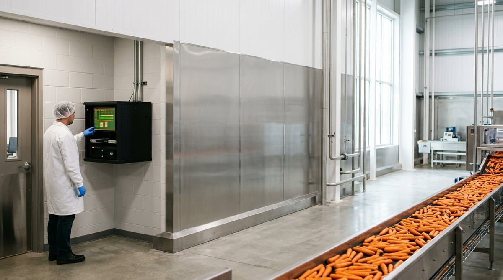

Copias de seguridad y continuidad en un software de calidad

Copias de seguridad y continuidad en un software de calidad
Las copias de seguridad de un software de calidad no suelen protagonizar las conversaciones del departamento hasta que ocurre lo inevitable: un fallo, una caída, una pérdida de datos en el peor momento posible. Y en la industria agroalimentaria, los peores momentos tienen nombre propio: una auditoría de certificación, un cierre de lote o una inspección oficial. Por eso, antes de que llegue ese día, conviene entender qué protección real ofrece tu herramienta y qué deberías exigirle.
Qué pasa el día que el software de calidad se cae en mitad de una auditoría o una línea de producción
Imagina la escena: el auditor está sentado frente a ti, pide el registro de verificaciones del plan APPCC del último trimestre y tú abres el sistema… que no responde. O peor, la línea de producción está en marcha y los operarios no pueden registrar los controles de temperatura porque la aplicación ha dejado de funcionar. Ese escenario no es tan improbable como parece.
Cuando un software de calidad cae, las consecuencias se ramifican rápido. En términos de auditoría, la falta de acceso a registros equivale, en la práctica, a no tenerlos. Esto puede suponer no conformidades graves frente a estándares como BRCGS (BRCGS, s.f.) o IFS, donde la trazabilidad documental es un requisito central. En términos operativos, los registros en papel de emergencia generan reprocesos, errores y una trazabilidad fragmentada que costará tiempo reconstruir.
El problema de fondo no es solo técnico: es de confianza. Un responsable de calidad necesita saber que el sistema en el que vuelca toda la información crítica del proceso va a estar disponible cuando se le necesite, y que si algo falla, los datos estarán intactos y recuperables en el menor tiempo posible.
Qué es una copia de seguridad automática y cada cuánto debería hacerse
Las copias de seguridad de un software de calidad son, en esencia, instantáneas del estado de los datos en un momento concreto. Si el sistema falla o los datos se corrompen, esa copia permite restaurar la información hasta el punto en que se realizó la última copia guardada.
La palabra clave aquí es automática. Depender de que alguien recuerde hacer una exportación manual antes de cerrar el día es una estrategia que falla exactamente cuando más se necesita. Un sistema bien configurado realiza copias de forma automática, sin intervención humana, y las almacena en una ubicación separada del servidor principal.
¿Cada cuánto tiempo deberían realizarse esas copias? La respuesta depende del volumen de datos críticos que genera tu operativa y de cuánta información estás dispuesto a perder en el peor caso. En entornos agroalimentarios con producción continua o registros de control en línea, lo recomendable es que las copias se realicen al menos cada 24 horas, y en entornos más exigentes, cada pocas horas o incluso en tiempo casi real.
Hay dos conceptos técnicos que cualquier responsable de calidad debería conocer:
- RPO (Recovery Point Objective): cuánto tiempo de datos puedes permitirte perder. Si tu RPO es de 4 horas, necesitas copias cada 4 horas como máximo.
- RTO (Recovery Time Objective): cuánto tiempo puedes estar sin el sistema operativo. Si tu RTO es de 2 horas, el proveedor debe garantizarte que en ese plazo el sistema estará de nuevo en funcionamiento.
Pedir estos datos al proveedor no es ser exigente en exceso: es hacer bien tu trabajo. Si quieres profundizar en cómo afecta la arquitectura del sistema a estas garantías, te recomendamos leer nuestro artículo sobre software de calidad en la nube vs. on-premise, donde analizamos las diferencias en disponibilidad y gestión según el modelo de despliegue.
La diferencia entre backup y plan de continuidad real
Muchos proveedores de software anuncian que “realizan copias de seguridad diarias” y con eso consideran cubierta la continuidad del negocio. No es lo mismo. Un backup es una herramienta dentro de un plan de continuidad, pero no es el plan completo.
Un plan de continuidad de negocio real para un software de calidad contempla, además de las copias de seguridad, al menos estos elementos:
- Redundancia de servidores: si un servidor falla, otro toma el relevo automáticamente sin que el usuario perciba la interrupción.
- Procedimientos de recuperación probados: no basta con tener los backups; hay que comprobar periódicamente que la restauración funciona y en cuánto tiempo se completa.
- Plan de comunicación ante incidencias: quién avisa a quién, en qué plazos y con qué información cuando hay un problema.
- Protocolo de operación en modo degradado: qué hacer mientras el sistema no está disponible, cómo documentar de forma provisional y cómo reintegrar esos datos cuando el sistema vuelva.
Todo esto está directamente relacionado con los requisitos de seguridad e integridad de datos que impone la normativa alimentaria. Tal y como establece el Reglamento (CE) n.º 178/2002 (Reglamento [CE] 178/2002, 2002), los operadores de empresas alimentarias deben ser capaces de identificar y rastrear los productos en todas las etapas de producción, transformación y distribución. Si la herramienta que soporta esa trazabilidad no ofrece garantías de continuidad, la responsabilidad recae igualmente sobre la empresa.
Para entender mejor cómo proteger la información que gestiona tu sistema, puedes consultar también nuestro artículo sobre seguridad de los datos en un software de calidad, donde abordamos aspectos como el cifrado, los accesos y la gestión de permisos.
Qué exigir por contrato sobre disponibilidad y recuperación ante fallos
La conversación sobre copias de seguridad y continuidad no debería quedarse en una promesa verbal o en una descripción genérica de la ficha técnica del producto. Debe traducirse en compromisos contractuales concretos. Estos son los puntos que no deberían faltar en el contrato con tu proveedor de software de calidad:
- SLA de disponibilidad (Service Level Agreement): porcentaje garantizado de tiempo que el sistema estará operativo. Lo habitual en soluciones profesionales es un 99,5 % o superior. Exige que ese porcentaje se mida y que haya penalizaciones claras si no se cumple.
- Frecuencia y ubicación de los backups: cada cuánto se realizan, dónde se almacenan (idealmente en centros de datos separados geográficamente) y durante cuánto tiempo se conservan las copias.
- RTO y RPO garantizados: por escrito, con los tiempos máximos de recuperación en caso de fallo.
- Procedimiento de notificación de incidencias: plazos en los que el proveedor debe comunicarte cualquier problema que afecte a la disponibilidad o integridad de tus datos.
- Derecho a exportar tus datos: en caso de cambio de proveedor o cierre del servicio, debes poder recuperar toda tu información en un formato utilizable, sin condiciones abusivas.
- Auditorías y certificaciones del proveedor: solicita evidencias de que el proveedor cuenta con certificaciones de seguridad como ISO 27001 o que sus centros de datos tienen certificaciones equivalentes.
Negociar estos puntos no solo protege a tu empresa en caso de fallo técnico: también demuestra ante clientes, certificadoras e inspectores que gestionas la calidad con rigor en todos sus niveles, incluida la infraestructura digital que la soporta.
En Solved sabemos que la tranquilidad de un responsable de calidad depende de que cada parte del sistema funcione cuando se la necesita. Por eso nuestro software está diseñado con criterios de disponibilidad, redundancia y protección de datos que te permiten centrarte en lo que importa: garantizar la seguridad y calidad de tus productos, con o sin auditor delante.
Referencias
- BRCGS. (s.f.). BRCGS Global Standards. https://www.brcgs.com/
- Reglamento (CE) n.o 178/2002 del Parlamento Europeo y del Consejo, de 28 de enero de 2002, por el que se establecen los principios y los requisitos generales de la legislacion alimentaria. (2002). https://eur-lex.europa.eu/eli/reg/2002/178/oj?locale=es